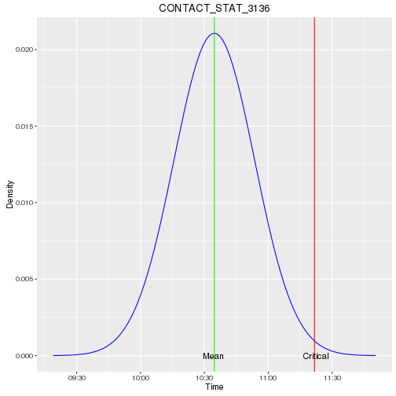

- A system that load data from heterogeneous external sources to do complex computation
- The arrival time of data files is critical to show updated data for the users of that system
- Is important to know when a data file is in late
Mariano Fiorentino
To monitor the system has been built an application that:
With the collected arrival time has been wrote a simple shiny application useful to explore the mean arrival time of every file.
This small application shows a plot with the indication of the mean and the critical arrival time per every file. Instead of drawing an histogram with the arrival time groupped in bins, the plots are drawed using the calculated mean and standard deviation, under the assumption that the underlying data are iid Gaussian.
Here an example of a calculated data record. The unit of measure for MEAN, MAXTIME and SD is minutes after midnigth:
## 'data.frame': 1 obs. of 7 variables:
## $ COUNT : num 12
## $ DAYS : Factor w/ 1 level "Mon;Tue;Wed;Thu;Fri;Sat": 1
## $ ISSUN : logi FALSE
## $ LOADER : Factor w/ 1 level "CONTACT_STAT_3136": 1
## $ MAXTIME: num 622
## $ MEAN : num 575
## $ SD : num 18.9

In this plot we can see that the average arrival time for the selected file is:
## [1] "10:34:40"
The red line shown the arrival time for the file over which we send a warning. This is calculated using t confidence interval formula:
$$\bar X \pm t_{n-1} S/\sqrt{n}$$
In this case the max allowed value is:
## [1] "11:21:41"